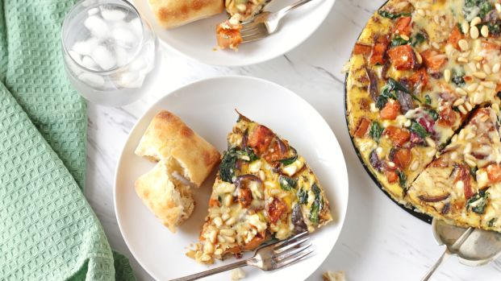

Pomegranate
Pomegranate's sweet, tart flavors are worth the extra effort of removing the inedible rind. Not to mention their juicy, jewel-toned seeds pair perfectly with classic Middle Eastern dishes.
Persimmon
Sweet with a hint of spice, persimmons should be your favorite winter fruits. Their jewel-toned flesh is delicious as is, but it's especially flavorful in desserts.
Sweet Potatoes
Sweet potatoes are delicious baked, but they are also delicious when used in soup or main dishes like quiche.